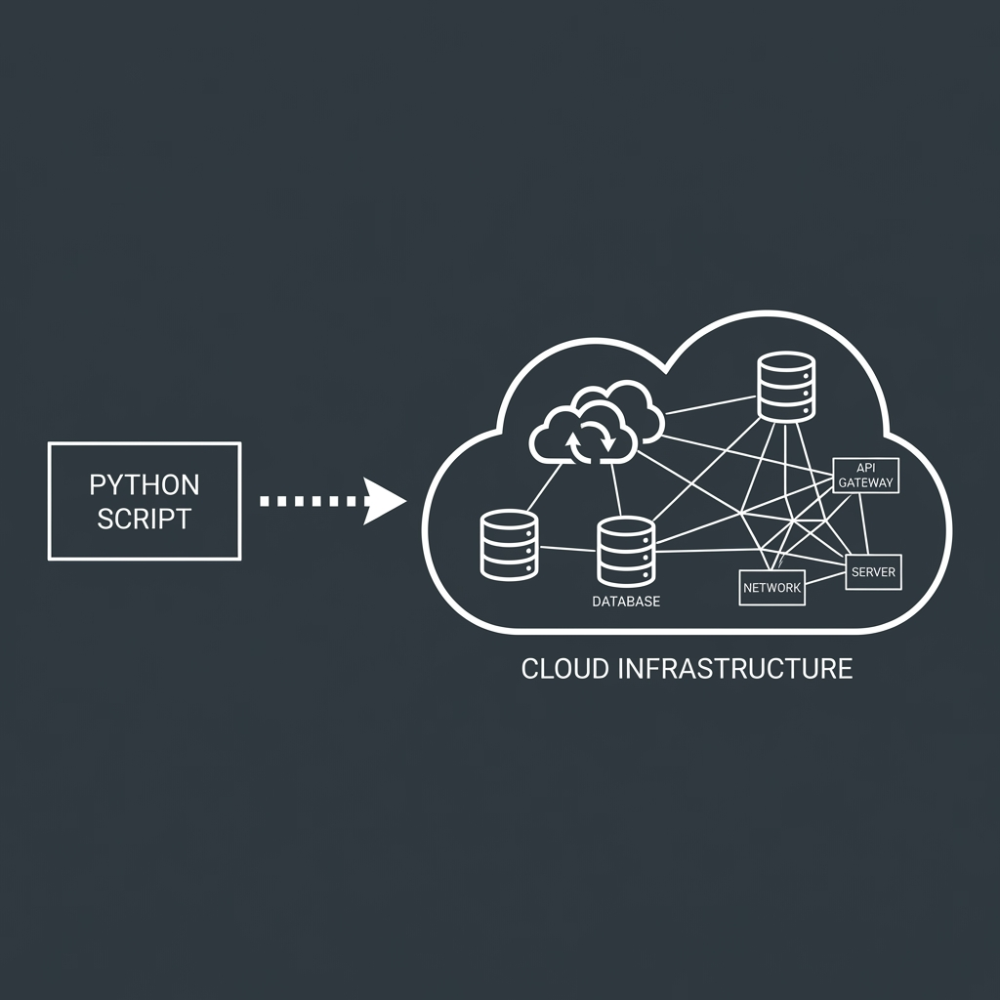

One Year Later
From "Exercise Left to the Reader"
to Production-Ready Infrastructure
Setup was a 60-step process.

Translating code implementation into cloud reality was the bottleneck.
The shift from "Chatbot" to "Agentic CLI".
Explored codebase. Chose SAM. Generated Template. Fixed Errors.
• Versioned
• Reproducible
• 1-Command Deploy
Knowledgeable Colleague
"I can't touch the keyboard."Junior Engineer
"I'll handle that task."As tools become more capable,
Domain Knowledge matters MORE.
• Design Judgment: Is this architecture right?
• Security: Are IAM roles scoped correctly?
• Ops: What will this cost?
Volume of delegation increases. Review remains constant.
It doesn't replace it.
The Sweet Spot:
Powerful enough to delegate.
Constrained enough to verify.